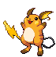
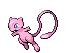

-
Bulbasaur #001

- Grama
- Veneno
Bulbasaur é uma criatura quadrúpede réptil que lembra um dinossauro jovem, com um azul-verde manchado. Ele tem três dedos brancos ou garras crescendo fora de suas quatro pernas, e seus olhos são de um vermelho brilhante.
-
Ivysaur #002

- Grama
- Veneno
Ivyssauro é um Pokémon anfíbio quadrúpede que tem a pele azul-esverdeada com manchas mais escuras. Sua flor em suas costas cresce conforme à intensidade da luz do sol absorvida. Como a flor cresce, Ivysaur perde a capacidade de ficar sobre as patas traseiras. A flor produz um cheiro agradável quando ele está pronto para florescer, e Ivysaur está pronto para evoluir para Venusaur.
-
Ivysaur #003

- Grama
- Veneno
Venasaur é um Pokémon quadrúpede com pele verde acidentada, e azulada. Ele tem olhos pequenos e circulares vermelhos, dois dentes pontiagudos em sua mandíbula superior, e quatro dentes pontiagudos em sua mandíbula inferior. Tem três dedos com garras em cada pé. Possui um grande coqueiro em suas costas.
-
Charmander #004

- Fogo
Charmander é um pequeno dinossauro bípede como pokémon. A maioria da cor do seu corpo é laranja, enquanto o seu ventre baixo é de cor amarelo-claro. Charmander, como suas evoluções, tem uma chama na ponta de sua cauda que arde constantemente.
-
charmeleon #005

- Fogo
Charmeleon é um Pokérmon reptiliano. Ele tem escamas vermelhas na sua parte inferior. Existe um chifre na parte de trás da cabeça. Ele tem olhos verdes e um focinho comprido. Tem braços relativamente longos com três garras afiadas. Suas pernas curtas têm pés com três garras. A ponta de sua cauda longa, poderosa tem uma chama acesa sobre ele.
-
charizard #006

- Fogo
Charizard é um Pokémon dracônico e bípede . É principalmente laranja com uma parte inferior creme do peito até a ponta da cauda. Tem um pescoço longo, pequenos olhos azuis, narinas ligeiramente levantadas e duas estruturas semelhantes a chifres saindo da parte de trás de sua cabeça retangular. Existem duas presas visíveis na mandíbula superior quando a boca está fechada. Duas grandes asas com partes inferiores azul-esverdeadas brotam de suas costas, e um apêndice em forma de chifre se projeta do topo da terceira articulação de cada asa. Um único dedo da asa é visível através do centro de cada membrana da asa.
-
squirtle #007

- Agua
Squirtle é um pequeno Pokémon, azul-claro com uma aparência semelhante ao de uma tartaruga. Como tartarugas, Squirtle tem um escudo que cobre seu corpo com orifícios que permitem que seus membros, cauda e cabeça para ser exposto. Ao contrário de uma tartaruga, Squirtle é normalmente bípede.
-
Wartortle #008

- Agua
Wartortle move suas orelhas para nadar mais rápido e, é um Pokémon muito popular como um animal de estimação. E na sua última evolução Blastoise, o mais forte de todos e super popular, tem um jatos em sua concha para ataques em alta velocidade, seus jatos são sua maior arma.
-
Blastoise #009

- Agua
Blastoise tem canhões de água que se projetam de seu casco. Os canhões de água são muito precisos. Eles podem disparar balas de água com uma precisão suficiente para atacar latas vazias de uma distância de mais de 160 pés.
-
Caterpie #010

- Inseto
Caterpie é baseado em uma minhoca. Sua pele é verde, tem olhos amarelos com púpilas pretas, tem uma antena vermelha (rosa no anime) e tem uma "boca" verde amarela no anime, tem quatro pequenas patas amarelas e em seu corpo, existem vários círculos amarelos e na ponta de sua calda tem uma espécie de chocalho.
-
metapod #011

- Inseto
O escudo que cobre o corpo deste Pokémon é tão duro como uma laje de ferro. Metapod não se move muito. Ele ainda permanece assim porque está preparando suas entranhas macias para a evolução dentro da casca dura.
-
butterfree #012

- Inseto
Butterfree tem uma capacidade superior para procurar um delicioso mel de flores. Ele pode até mesmo buscar, extrair, transportar e mel de flores que estão florescendo mais de seis milhas do seu ninho.
-
weedle #013

- Inseto
Weedle tem um sentido extremamente agudo de cheiro. Ele é capaz de distinguir os seus tipos favoritos de folhas daqueles que não gosta apenas por cheirar com a sua grande tromba vermelha (nariz).
-
kakuna #014

- Inseto
Kakuna permanece praticamente imóvel quando ele se agarra a uma árvore. No entanto, no interior, é extremamente ocupado, que se prepara para a sua evolução que vem. Isto é evidente o quão quente a casca torna-se ao toque.
-
beedrill #015

- Inseto
Beedrill é extremamente territorial. Ninguém deve se aproximar de seu ninho - isto é para sua própria segurança. Se ele se irritou, eles vão atacar em um enxame furioso.
-
Pidgey #016

- Voador
Pidgey tem um sentido extremamente afiado de direção. Ele é capaz de infalivelmente voltar para seu ninho, por mais longe que seja removido do seu ambiente familiar.
-
Pidgeotto #017

- Voador
Pidgeotto reivindica uma grande área como seu próprio território. Este Pokémon voa ao redor, patrulhando o seu espaço de vida. Se seu território for violado, ele não mostra misericórdia em punir completamente o inimigo com suas garras afiadas.
-
Pidgeot #018

- Voador
Este Pokémon tem uma plumagem deslumbrante de penas brilhantes. Muitos treinadores são cativados pela beleza impressionante das penas em sua cabeça, obrigando-os a escolher Pidgeot como seu Pokémon.
-
Pikachu #025

- Eletrico
Toda vez que Pikachu dá de cara com algo novo, ele o acerta com uma descarga elétrica. Se você se deparar com um fruto torrado, é uma evidência de que esse Pokémon errou na intensidade de energia de sua descarga elétrica.
-
Raichu #026
- Eletrico
Se as sacas elétricas forem carregadas excessivamente, Raichu planta seu rabo no solo e descarrega. Manchas queimados no solo são encontradas perto dos ninhos desse Pokémon.
-
Tauros #128

- Normal
O Pokémon Wild Bull precisa ficar furioso o tempo todo. Se não houver oponentes para lutar, este Pokémon derruba árvores grossas com uma corrida para esfriar seu ardor.
-
Snorlax #143

- Normal
Um dia típico de Snorlax consiste em nada mais do que comer e dormir. É um Pokémon tão dócil que há crianças que usam sua barriga expansiva como um lugar para brincar.
-
Mewtwo #150

- Pisiquico
Mewtwo é uma criatura com uma postura humanóide, mas tem algumas características felinas. O corpo de Mewtwo é cinzento-roxo e uma cauda longa totalmente da cor roxa. Mewtwo tem três dígitos circulares em cada apêndice. Tem uma ponta no interior de cada um dos pés, como muitos primatas do mundo real, bem como duas outras que ficam na frente. Ele tem os olhos roxos e duas orelhas curtas.
-
Mew #151
- Pisiquico
Mew é normalmente descrito como um Pokémon gato cor de rosa. O cabelo de Mew é tão fino, ele só pode ser visto sob um microscópio. Ele tem uma cauda longa, magra terminando com uma ponta arredondada. Mew tem pernas traseiras grandes e braços curtos, com patas de três dedos. Os pés de Mew são muito grandes com marcas ovais perto de seus três dedos do pé. Mew tem orelhas triangulares e olhos de bebe azuis. Mew é dito que tem o DNA de cada Pokémon contido no seu corpo e é por isso que ele se transforma em qualquer outro tipo de Pokémon. Ele também muitas vezes é representado em uma esfera rosa.